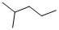
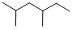
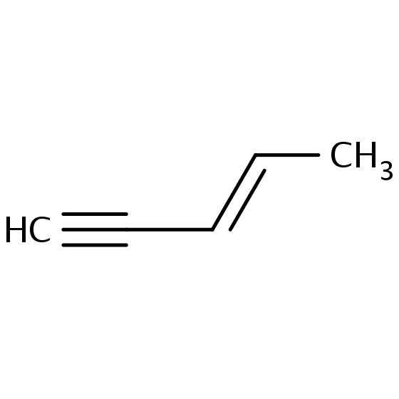
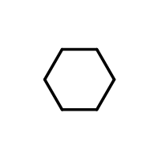
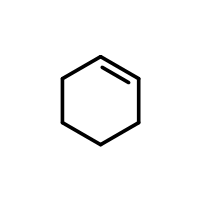
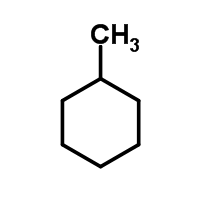

※ 未完です (incomplete; na’e mulno)
※ 化合物の画像（lo xukmi pixra）： ChemicalBook jo’u ChemSpider
ni’o
la’oi IUPAC zo’u
.i ja’o
mu’a
ni’o
2-methylpentane → 2-methyl mulkan → rebopalkilmulkan

.i ja’o
ca’e galfi
.i ji’a
ca’e galfi ge
gi
.i mu’a
2,4-dimethylhexane → rejevoboremeipalkilxalkan (re je vo bo remei palkil xalkan)

ni’o
.e’o jundi la’oi k → g
ni’o
e’o jundi la’oi di → remei
.imu’a (la’aru’e mlixe nandu)
pent-3-en-1-yne → mulgbocibo’enbopabo’in (mulk bo ci bo en bo pa bo in)

e’o jundi la’oi yne → in
ca’e pilno ra’oi jin noi rafsi zo djine (環, ring)
.iva’i
ca’e galfi
mu’a
cyclohexane → jinxalkan

cyclohexene → jinxalken

methylcyclohexane → palkiljinxalkan
